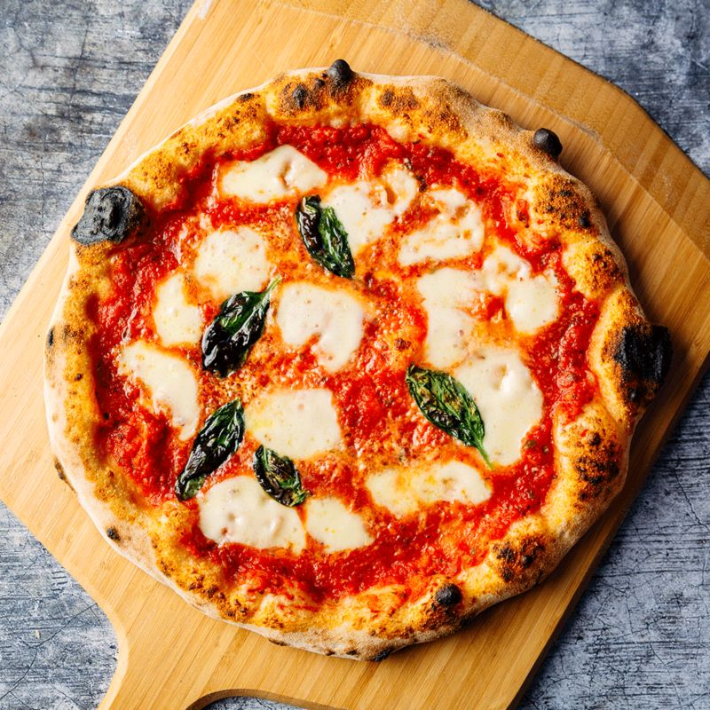

Home Made Margherita Pizza

When it comes to classics, you can’t beat a simple Margherita pizza. If you’re new to making pizza at home, this simple recipe is one of Ooni’s most-loved pizza recipes and a great place to start. Enjoy this classic combination of gooey mozzarella, sweet-tangy tomato sauce and fragrant fresh basil.
Ingredients
- 1 store bought or homemade pizza dough
- All Purpose flour or fine semolina, for dusting
- 4-5 tablespoons store bought or homemade pizza sauce
- 2 ounces fresh mozzarella, torn into bite sized pieces
- 4-5 whole basil leaves
Step by Step Directions
- Scrape the dough onto a well-floured counter top and knead the dough for three minutes. It should quickly come together and begin to get sticky. Dust the dough with flour as needed (sometimes I will have to do this 2 to 3 times, depending on humidity levels) – it should be slightly tacky, but should not be sticking to your counter top. After about 3 minutes, the dough should be smooth, slightly elastic, and tacky. Lightly grease a large mixing bowl with olive oil, and place the dough into the bowl.
- Cover the bowl with a kitchen towel (or plastic wrap) and allow the dough to rise in a warm, dry area of your kitchen for 2 hours or until the dough has doubled in size.
- Preheat Oven and Pizza Steel or Stone: Place the pizza steel (or stone) on the second to top rack of your oven (roughly 8 inches from the broiler element), and preheat the oven and steel (or stone) to 550°F (285°C) for a minumum of 1 hour. If your oven does not go up to 550°F (285°C) or you are using a delicate pizza stone, I recommend heating it to a maximum of 500°F (260°C)
- As the oven is preheating, assemble the ingredients. In a small bowl, stir together the pureed tomatoes, minced garlic, extra virgin olive oil, pepper, and salt. Set aside another small bowl with the cubed mozzarella cheese (pat the cheese with a paper towel to remove any excess moisture). Set aside the basil leaves and grated parmigiano-reggiano cheese for easy grabbing.
- Place the dough on a large plate or floured counter top, cover gently with plastic wrap, and allow the dough to rest for 5 to 10 minutes.
- Assemble the Pizza: Sprinkle the pizza peel (if you do not own a pizza peel, you can try using the back of a half sheet pan - but it is tricky!) with a tablespoon of semolina and dusting of all-purpose flour. Gently use both hands to stretch one ball of pizza dough into roughly a 10-inch circle (don’t worry if its not perfectly uniform). If the dough springs back or is too elastic, allow it to rest for an additional five minutes. The edges of the dough can be slightly thicker, but make sure the center of the dough is thin (you should be able to see some light through it if you held it up). Gently transfer the dough onto the semolina and flour dusted pizza peel or baking sheet.
- Drizzle or brush the dough lightly (using your fingertips) with olive oil (roughly a teaspoon. Using a large spoon, add roughly ½ cup of the tomato sauce onto the pizza dough, leaving a ½-inch or ¾-inch border on all sides. Use the back of the spoon to spread it evenly and thinly. Sprinkle a tablespoon of parmigiano-reggiano cheese onto the pizza sauce. Add half of the cubed mozzarella, distributing it evenly over the entire pizza. Using your hands, tear a few large basil leaves, and sprinkle the basil over the pizza. At this point, I’ll occasionally stretch the sides of the dough out a bit to make it even thinner. Gently slide the pizza from the peel onto the heated baking stone. Bake for 7 to 8 minutes, or until the crust is golden and the cheese is bubbling and caramelized and the edges of the pizza are golden brown. Note: If you're looking for more color, finish the pizza under the low or medium broil setting, but watch it carefully!
Remove the pizza carefully from the oven with the pizza peel, transfer to a wooden cutting board or foil, drizzle the top with olive oil, some grated parmigiano-reggiano cheese, and chiffonade of fresh basil. Slice and serve immediately and/or prepare the second pizza.
Tips and Variations
- Semolina flour has a higher burn point than regular flour, and ensures that the dough will not stick to the peel when transferring the pizza to the oven.
- There is no need to dissolve the yeast in warm water before using (as commonly believed). Active dry yeast has been reformulated in recent years to contain significantly smaller granules and will not have trouble dissolving into the dough. However, it is important to ensure that your active dry yeast is indeed alive and well. Double check your expiration date and when in a doubt, proof it.
- If preparing the dough in advance: once the dough has rested for two hours, separate into two portions, wrap each piece of dough well in plastic wrap, and place them in a freezer-safe bag. The dough can be chilled in the refrigerator for up to 24 hours or frozen for 3 months. Thaw the dough in the refrigerator, and allow it to stand at room temperature (in a greased bowl, covered with a kitchen towel) for at least 30 minutes before using